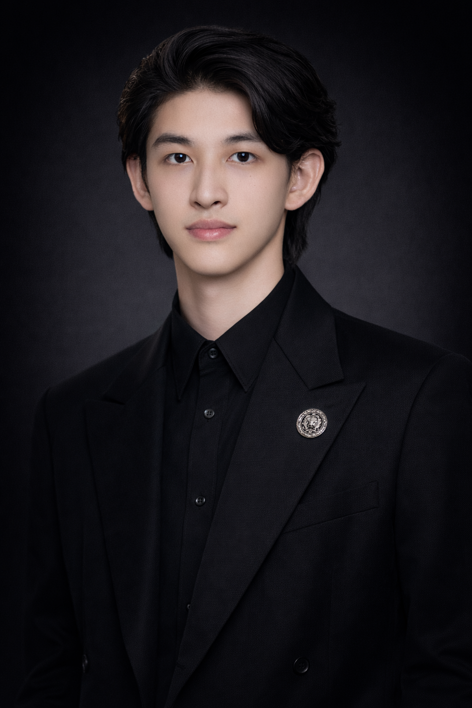

UCL · Electronic & Electrical Engineering
Second-year undergraduate researcher exploring photonics, optical communications, and visible light communication. First Class Honours.
I'm a second-year BEng Electronic & Electrical Engineering student at University College London, on track for First Class Honours. My academic focus lies at the intersection of photonics and communication systems.
I'm driven by the potential of light-based technologies to reshape how we transmit information — from optical fibre networks to visible light communication and LiFi. Beyond academics, I serve as a student representative for the EEE department, bridging student concerns with faculty leadership.
Originally from Chongqing, China, now based in London. I believe rigorous engineering should be paired with clarity of thought and an appreciation for craft in every detail.

Wave propagation in optical media, photonic crystal structures, and nonlinear optical phenomena. Exploring the fundamental physics of light–matter interaction.
High-capacity fibre-optic systems, coherent detection, advanced modulation formats, and signal processing for next-generation networks.
VLC and LiFi technologies leveraging LED infrastructure for high-speed wireless data transmission. Bridging illumination and communication.
Smart sensor systems integrating photonic and electronic approaches for environmental monitoring and industrial applications.
Research placement under Prof. Chen Chen, focusing on intelligent sensing systems and photonic applications.
Representing cohort interests at Student-Staff Consultative Committee meetings. Advocating for policy improvements on exam resits, module structures, and attendance.
First Class Honours trajectory with strong performance across photonics, semiconductor devices, digital design, and analog electronics.
Design and analysis of a sand-based thermal energy storage system, exploring phase change materials and heat transfer optimisation for sustainable energy applications.
Designed and verified digital circuits including shift-accumulate units and finite state machines using SystemVerilog, with comprehensive testbench development.
Collaborative engineering project delivering verification plan and manufacturing test procedure documents. Team-based systems engineering methodology.
I'm always open to discussing research opportunities, collaborations, or simply exchanging ideas in photonics and optical communications. Feel free to reach out.